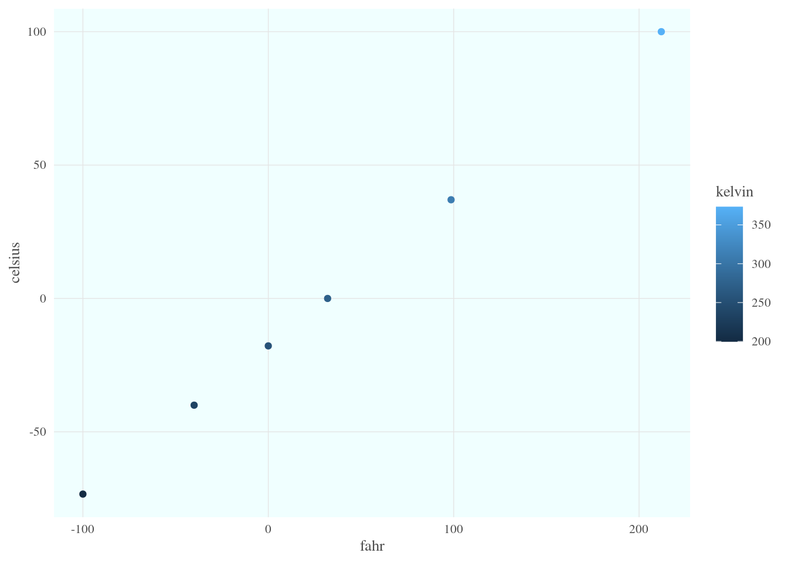
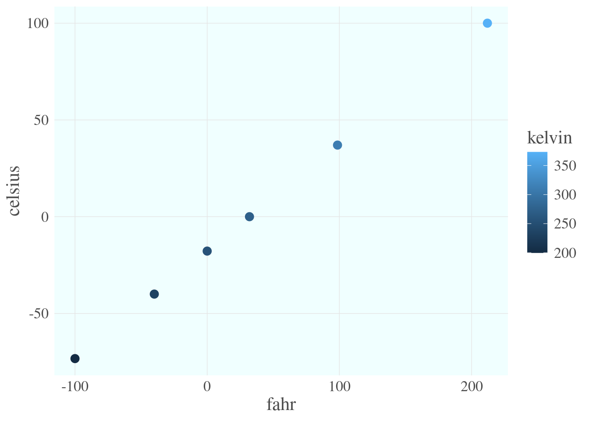

airtemps <- c(212, 30.3, 78, 32)
celsius1 <- (airtemps[1] - 32) * 5/9
celsius2 <- (airtemps[2] - 32) * 5/9
celsius3 <- (airtemps[3] - 32) * 5/9Learning Objectives
- Explain the importance of using and developing functions
- Create custom functions using R code
- Document functions to improve understanding and code communication
17.1 R Functions
Many people write R code as a single, continuous stream of commands, often drawn from the R Console itself and simply pasted into a script. While any script brings benefits over non-scripted solutions, there are advantages to breaking code into small, reusable modules. This is the role of a function in R. In this lesson, we will review the advantages of coding with functions, practice by creating some functions and show how to call them, and then do some exercises to build other simple functions.
17.1.1 Why Functions?
DRY: Don’t Repeat Yourself
“You should consider writing a function whenever you’ve copied and pasted a block of code more than twice (i.e. you now have three copies of the same code).”
Chapter 19 Functions in R for Data Science (Grolemund & Wickham)
There are many advantages to writing small functions that only complete one logical task and do it well:
- You can make the code easier to understand by giving an informative name to your function
- When you need to update your code, you only need to update in one place
- You can take advantage of iteration techniques such as the
purrr::mapfunctions
17.1.2 Exercise: Temperature Conversion
Imagine you have a bunch of data measured in Fahrenheit and you want to convert that for analytical purposes to Celsius. You might have an R script that does this for you.
Note the duplicated code, where the same formula is repeated three times. This code would be both more compact and more reliable if we didn’t repeat ourselves.
Create a Function that Converts Fahrenheit to Celsius
Functions in R are a mechanism to process some input and return a value. Similarly to other variables, functions can be assigned to a variable so that they can be used throughout code by reference. To create a function in R, you use the function function (so meta!) and assign its result to a variable. Let’s create a function that calculates Celsius temperature outputs from Fahrenheit temperature inputs.
fahr_to_celsius <- function(fahr) {
celsius <- (fahr - 32) * 5/9
return(celsius)
}By running this code, we have created a function and stored it in R’s global environment. The fahr argument to the function function indicates that the function we are creating takes a single parameter (the temperature in Fahrenheit), and the return statement indicates that the function should return the value in the celsius variable that was calculated inside the function. Let’s use it, and check if we got the same value as before:
celsius1a <- fahr_to_celsius(fahr = airtemps[1])
celsius1a[1] 100celsius1 == celsius1a[1] TRUEExcellent. So now we have a conversion function we can use. Note that, because most operations in R can work on vectors as easily as single values, we can also pass the original vector of airtemps, and calculate all of the results at once:
celsius <- fahr_to_celsius(fahr = airtemps)
celsius[1] 100.0000000 -0.9444444 25.5555556 0.0000000This takes a vector of temperatures in Fahrenheit, and returns a vector of temperatures in Celsius. Note also that we explicitly named the argument inside the function call (fahr_to_celsius(fahr = airtemps)), but in this simple case, R can figure it out if we didn’t explicitly tell it the argument name (fahr_to_celsius(airtemps)). More on this later!
Your Turn: Create a Function that Converts Celsius to Fahrenheit
Exercise
Create a function named celsius_to_fahr that does the reverse, it takes temperature data in Celsius as input, and returns the data converted to Fahrenheit.
Create the function celsius_to_fahr in a new code chunk or even a separate R Script file.
Then use that formula to convert the celsius vector back into a vector of Fahrenheit values, and compare it to the original airtemps vector to ensure that your answers are correct.
Hint: the formula for Celsius to Fahrenheit conversions is celsius * 9/5 + 32.
Did you encounter any issues with rounding or precision?
17.1.3 Exercise: Minimizing Work with Functions
Functions can of course be as simple or complex as needed. They can be be very effective in repeatedly performing calculations, or for bundling a group of commands that are used on many different input data sources. For example, we might create a simple function that takes Fahrenheit temperatures as input, and calculates both Celsius and Kelvin temperatures. All three values are then returned in a list, making it very easy to create a comparison table among the three scales.
convert_temps <- function(fahr) {
celsius <- (fahr - 32) * 5/9
kelvin <- celsius + 273.15
return(list(fahr = fahr, celsius = celsius, kelvin = kelvin))
}
t_vec <- c(-100, -40, 0, 32, 98.6, 212)
temps_df <- data.frame(convert_temps(t_vec))But what if we wanted to make the function more flexible - instead of taking only Fahrenheit temperatures as input, what if we wanted to allow the user to optionally provide Celsius? Let’s add an additional argument so the user can specify the input units. And let’s return the result already formatted as a data frame.
convert_temps2 <- function(temp, unit = 'F') {
### Error checking:
unit <- toupper(unit) ### try to anticipate common mistakes!
if(!unit %in% c('F', 'C')) stop('The units must be either F or C!')
if(unit == 'F') {
fahr <- temp
celsius <- (fahr - 32) * 5/9
} else {
celsius <- temp
fahr <- celsius * 9 / 5 + 32
}
kelvin <- celsius + 273.15
out_df <- data.frame(fahr, celsius, kelvin)
return(out_df)
}
c_temps_df <- convert_temps2(temp = t_vec, unit = 'C')
f_temps_df <- convert_temps2(t_vec, 'F')
identical(f_temps_df, temps_df)[1] TRUEBy providing a default for the unit argument (unit = 'F'), the user can opt to skip that argument and R will use the default value. Because temp does not have a default, the user cannot skip that one! And note also that R interprets the arguments in order, so we can even skip naming them, though when calling novel or complex functions it is helpful to explicitly name the arguments.
17.1.4 Functions in the tidyverse
For those of us who frequently work with the tidyverse package and all its amazing functionality, understanding how those tidyverse functions are designed can help you write your own tidyverse style functions! There are two common use cases:
- A function that can be used to calculate inside a
mutate()orsummarize() - A function that can be used seamlessly in a piped
tidyverse-style workflow
17.1.4.1 Functions for mutate or summarize
This kind of function should take a vector (or multiple vectors) and return a single vector. Functions that return a vector the same length as the input would be useful for mutate(); functions that return a vector of length 1 (e.g., mean() or sd()) would be useful for summarize(). We’ve already created two functions like that!
data.frame(f = t_vec) %>%
mutate(c = fahr_to_celsius(fahr = f),
f2 = celsius_to_fahr(celsius = c)) f c f2
1 -100.0 -73.33333 -100.0
2 -40.0 -40.00000 -40.0
3 0.0 -17.77778 0.0
4 32.0 0.00000 32.0
5 98.6 37.00000 98.6
6 212.0 100.00000 212.0Why wouldn’t our convert_temps() function work here?
17.1.4.2 Functions for piped workflows
A common workflow in the tidyverse is to use the pipe operator %>% (or the newer built-in |>) to pass a data frame into a function like select(), filter(), or mutate(), and then pass the results from that into another function, and so on:
f_temps_df %>%
select(fahr, celsius) %>%
mutate(rankine = fahr + 459.67) fahr celsius rankine
1 -100.0 -73.33333 359.67
2 -40.0 -40.00000 419.67
3 0.0 -17.77778 459.67
4 32.0 0.00000 491.67
5 98.6 37.00000 558.27
6 212.0 100.00000 671.67For this to work:
- Every
dplyrandtidyrfunction takes a data frame (or variant such as a tibble) as its first argument. - Every
dplyrandtidyrfunction returns a data frame (or variant).
The pipe operator %>% says, take the preceding object (a data frame, such as one returned by a dplyr function) and pass it to the next function (such as another dplyr function) as the first argument!
17.1.5 Exercise: make a tidyverse style function
Let’s make a function that can take a dataframe and calculate a new column that tells whether a temperature is hot or cold, based on some threshold.
calc_hotcold <- function(df, thresh = 70) {
if(!'fahr' %in% names(df)) stop('The data frame must have a column called `fahr`!')
out_df <- df %>%
mutate(hotcold = ifelse(fahr > thresh, 'hot', 'cold'))
return(out_df)
}
f_temps_df %>%
select(fahr, celsius) %>%
calc_hotcold(thresh = 80) %>%
arrange(desc(fahr)) fahr celsius hotcold
1 212.0 100.00000 hot
2 98.6 37.00000 hot
3 32.0 0.00000 cold
4 0.0 -17.77778 cold
5 -40.0 -40.00000 cold
6 -100.0 -73.33333 cold17.1.6 Functions and ggplot()
Once we have a dataset like that, we might want to plot it. One thing that we do repeatedly is set a consistent set of display elements for creating graphs and plots. By using a function to create a custom ggplot theme, we can enable to keep key parts of the formatting flexible. For example, in the custom_theme function, we provide a base_size argument that defaults to using a font size of 9 points. Because it has a default set, it can safely be omitted. But if it is provided, then that value is used to set the base font size for the plot.
custom_theme <- function(base_size = 9) {
### NOTE: functions used *inside* a function need to be available,
### e.g., attached with library() or called using namespace (package::function)
ggplot2::theme(
text = element_text(family = 'serif',
color = 'gray30',
size = base_size),
plot.title = element_text(size = rel(1.25),
hjust = 0.5,
face = 'bold'),
panel.background = element_rect(fill = 'azure'),
panel.border = element_blank(),
panel.grid.minor = element_blank(),
panel.grid.major = element_line(colour = 'grey90',
linewidth = 0.25),
legend.position = 'right',
legend.key = element_rect(colour = NA,
fill = NA),
axis.ticks = element_blank(),
axis.line = element_blank()
)
}
library(ggplot2)
ggplot(temps_df, mapping = aes(x = fahr, y = celsius, color = kelvin)) +
geom_point() +
custom_theme(10)
In this case, we set the font size to 10, and plotted the air temperatures. The custom_theme function can be used anywhere that one needs to consistently format a plot.
But we can go further. One can wrap the entire call to ggplot in a function, enabling one to create many plots of the same type with a consistent structure. For example, we can create a scatterplot function that takes a data frame as input, along with a point_size for the points on the plot, and a font_size for the text.
scatterplot <- function(df, point_size = 2, font_size = 9) {
ggplot(df, mapping = aes(x = fahr, y = celsius, color = kelvin)) +
geom_point(size = point_size) +
custom_theme(font_size)
}Calling that lets us, in a single line of code, create a highly customized plot but maintain flexibility via the arguments passed in to the function. Let’s set the point size to 3 and font to 16 to make the plot more legible.
scatterplot(temps_df, point_size = 3, font_size = 16)
Once these functions are set up, all of the plots built with them can be reformatted by changing the settings in just the functions, whether they were used to create 1, 10, or 100 plots.
17.1.7 Summary
- Use functions to make code more legible, reuse code, and reduce errors
- Build functions with
function() - Design functions to work with
tidyverseflow